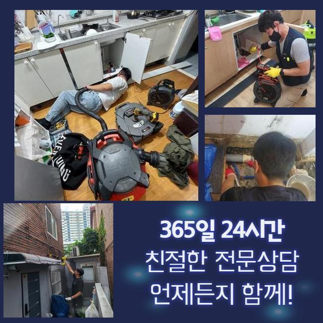
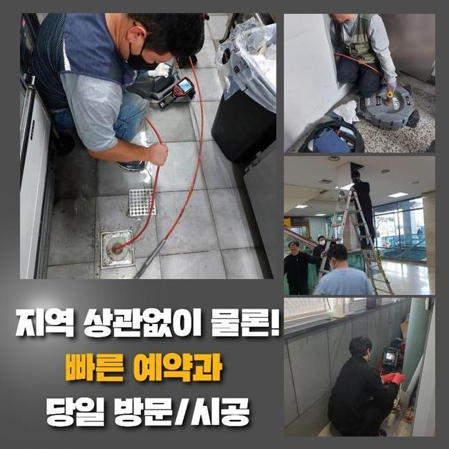
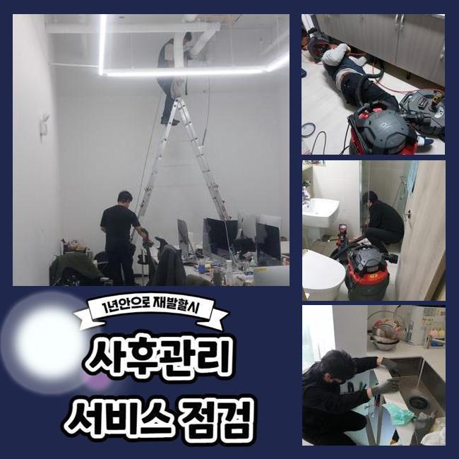
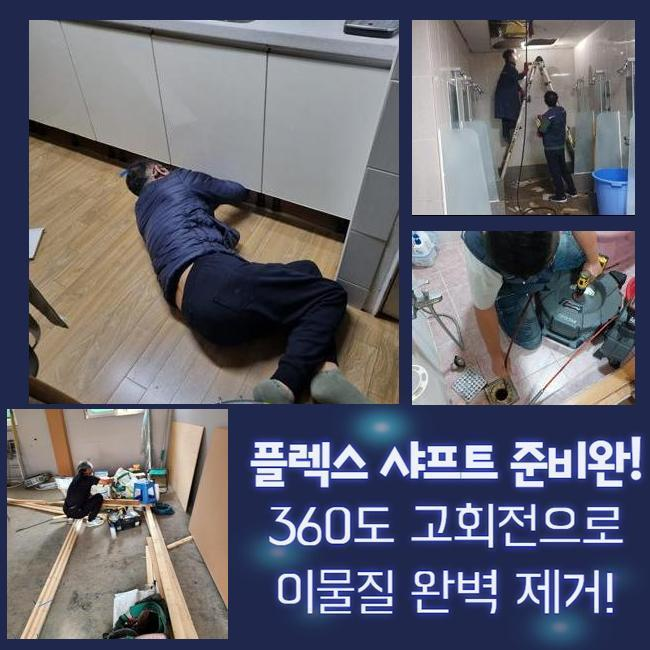
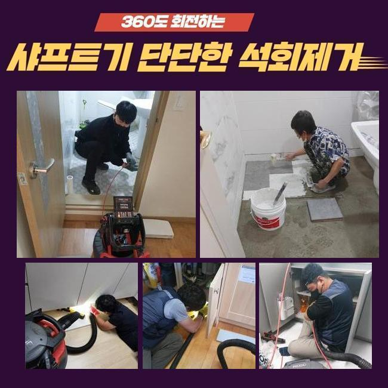
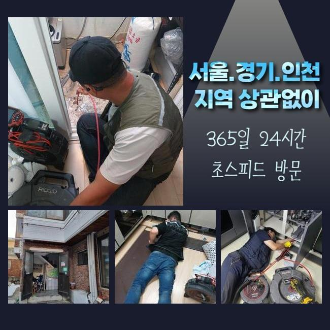
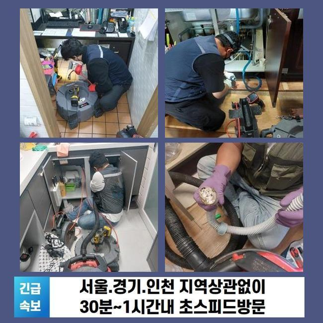

🏠 마포 마포동변기배관막힘 신정동 하수관고압세척 누수탐지
용인시 처인구 배관막힘 전문 시공 후기

📋 작업 개요
- 위치: 용인시 처인구, 수원시 영통구, 화성시 동탄
- 서비스 유형: 배관막힘, 누수수리, 배관수리, 고압세척, 내시경점검
- 작업 일시:
- 업체명: 하수구수사대 (010-5615-2118)
🔍 문제 상황
마포 마포동변기배관막힘 신정동 하수관고압세척 누수탐지
역류나 막힘이 일단 시작됐다면 사사롭게 느껴지는 변화여도 여러가지 문제점을 일으킬 가망이 있습니다
큰 건물에서 일어난 관로 막힘으로 안에 거주하시는 분들께서 일상적인 삶이 어려운 지경이라는 의뢰를 받은후 재빠르게 처소에 내방가게 되었답니다
일상을 영위하는 과정 중에 쉽게 마주칠수 있는 문제들이기에 슬기롭게 극복하는 해결책을 일찌감치 마스터하는게 좋아요
파이프의 차단이 생겨나는 메인 이슈는 관 입구방향으로 지속해서 쌓이는 폐기물들이라고 하여도 틀린말이 아니죠
건물안의 주민들을 통해 나오게되는 이물들과 석회성분과 같은 성분이 관속에 적층을 이루게되면 사이즈가 지속해서 증가하여 파이프 속을 채우는 형편을 야기하게 되겠죠
이렇게 이물이 들어가는걸 피하려면 배수공 사이즈에 맞는 배수덮개를 놔두는 행동도 긍정적인 방책이 된다고 볼수 있어요
노폐물들이 누적되는 것을 사전적으로 막음과 동시에 구린내 등이 풍기는 사태를 막는 결과까지 보여주죠
조심하여 사용하였어도 역류사태가 일어나거나 배관막힘이 나타났다면 곧장 전문가의 방문이 필요합니다
파이프에 생긴 정체문제를 합리적으로 없애나가려면 전문가의 진단 등을 받는게 타당하지만 수리에 쓰이는 지출이 부담되어 내버려두시는 분들도 많답니다

🔎 원인 분석
💡 전문가 진단: 정밀 진단 장비를 사용하여 슬러지의 고착 여부를 판명하고 타격/세척 작업을 실시했습니다.
적합하지 않은 물건을 활용해서 억지로 배관수리를 실시한다면 외려 정체를 심각하게 만들수가 있으므로 이러한 행동은 가급적 피하시는걸 당부합니다
또한 이러한 작업으로 말미암아 배수관에 파열을 유발하였다면 부속품의 교환이 필요한 모습에 처하실수가 있는거죠
현재상황에서 줄여나가는 것들에만 중점을 둔다면 해당 문제가 나타나기도 한다는걸 알아두시길 당부드립니다
그러므로 첨단 기기와 실력을 갖춘 전문가를 찾는것이 우선이라는 점을 명심하시길 부탁드립니다
관로정체가 포착된 곳에 도착하면 우선적으로 상황이 시작된 장소를 기점으로 빈틈없이 조사를 진행합니다
이번의 세대는 전체적인 흐름을 관찰한 다음에 세부적인 연유를 찾아내려 내시경설비를 활용 관로 내부 탐지를 시행하였죠
관로구멍은 작고 밝지 않다는 특성을 지니는데 내시경CCTV는 그곳을 바로 헤아릴수 있게 해주는 장비입니다
구간을 세분하여 검열해보면 고착화된 물질의 크기와 슬러지의 특질을 명확하게 알수있게 됩니다
내시경기기를 통해서 하수관 속을 샅샅이 관찰하였는데 관의 밑부분 위치에서부터 상부쪽으로 기다랗게 침전물이 쌓인걸 알아차렸죠
일상적인 보존업무가 진행된 것이 없다는 정황을 이해하였고 이러한 상황엔 상황에 맞게 기기를 써서 침착하게 문제 정체를 처치하는게 마땅하다고 말씀드릴수 있답니다

🔧 작업 과정
우선적으로 관안에 발발한 이물 정체를 해결하려 배수관 입구에 샤프트장비를 투입하면서 실재적 세척이 속행되었죠
분쇄공구에는 안전하게 제작된 노커가 체결되어 하수관에 끼칠수 있는 자극을 줄여준다는 긍정적인 측면이 존재하고 무겁지 않아서 여러 분야에 이용할수가 있습니다
정체가 일어난 관로부분에 집어 넣어서 천천히 분쇄를 해나간다면 입구부분에 누증되었던 이물들을 시원하게 제거말씀드릴수 있답니다
그후 갑갑하게 만들던 상태가 점점 사라지게 되는 것을 목견하실수 있답니다
배수 구멍이 80%정도 확보된 모습이 됐다면 메인관으로 이동해서 고압세정 기기를 사용하기 시작하는데요
저희팀은 언제나 통수에 요구되는 전 공구류들을 차에 싣고 다녀서 어떠한 형국에도 바로바로 대처안내드립니다
본 세대는 지하실의 천장면에 공용하수관이 설치되어 있었기 때문에 접이식사다리를 이용해서 시공을 이어나갔어요
효율성을 극대화하여 세정해 나가기 위해서 일부 구간에 작은 홀을 만든 후에 분사노즐을 삽입하였죠
고속 물청소는 높은 압력을 사용하여 이물 제거를 하는 방책으로 시공이 이어져나가는데 해당 업무를 하게되면 예상한 부분보다 다량의 이물질들이 방출될때가 많아요
그러하기에 보호용지를 써서 주위를 면밀하게 보전한 다음 수선을 수행해야 하죠
거기에다가 배관의 영역마다 두께나 강도가 다르기에 같은 세기를 적용하는 것이 아닌 개별적인 특수성을 이해하고 작업을 세분화하여야 하죠
이것으로 하수관 손상 따위의 불편한 트러블이 나오는 걸 방지할수 있습니다
내시경cctv로 관측한 영역을 시작점으로 연속적인 해당 업무를 진행한 결과 장시간 관내에 정체를 이루었던 노폐물들을 말끔하게 정리할수가 있게 된것이죠
다시 한번 조사하였더니 이전과 확실히 바뀐 상황을 내놓을 수가 있던것이고 누출된 슬러지들을 꼼꼼히 정리한뒤 지하에서 뚫었던 타공위치를 복구하는 것으로 총체적인 프로세스를 끝낼수 있었죠
배수관 막힘현상은 잘못되는 경우에 역류증상까지 표출될수 있으므로 재빠르게 수리하는게 합당합니다
금번 방문지처럼 주복 오피스텔은 문제가 터졌을 경우 발빠른 정리가 되지 못하면 손님들에게도 피해가 빚어질수 있어서 주기적인 점검이 권장됩니다


✅ 작업 완료
하수관을 조사하는 와중에 트러블을 파악하였다면 능란한 기술력과 전문 도구를 보유한 곳을 찾아서 순리대로 해결해 나가야 손해 수준을 줄일수 있는 점 다시한번 알립니다
과다 견적 청구의 우려를 경감하시도록 업무 전체를 진솔하게 오픈하고 있으며 실질적인 검점을 통하여 필요불가결한 것들만 제시해드릴 것임을 다시 한번 약조해 드리겠습니다
갑자기 나타난 문제 장애를 합리적으로 처치하길 원하신다면 저희에게 의뢰하시길 부탁드립니다
원하시는 때에 내방하도록 할게요




⚠️ 하수구 배관 막힘 예방 및 관리 가이드
- ✅ 머리카락, 비닐, 물티슈 등 물에 분해되지 않는 이물질은 절대 흘려보내지 마세요.
- ✅ 기름기 많은 식기는 설거지 전 키친타올로 먼저 기름때를 닦아내세요.
- ✅ 주기적으로 배수구에 뜨거운 물을 가득 부어주어 유지방 고착을 방지하세요.
- ✅ 작업 후 1년 이내 재발 시 무상 A/S 보증 서비스를 제공합니다.
💡 핵심 정리
- 확실한 장비 작업(내시경 점검 및 샤프트 스케일링)으로 원인을 뿌리 뽑습니다.
- 작업 후 1년 이내에 동일한 부위 재발 시 100% 무상 A/S 서비스를 보장합니다.
- 서울 · 경기 · 인천 전 지역에 24시간 언제든 긴급 출동할 수 있도록 항시 대기 중입니다.
❓ 자주 묻는 질문 (FAQ)
🚨 용인시 처인구 배관막힘 문제로 고민이신가요?
정확한 원인 진단과 확실한 시공으로 재발 없는 해결을 약속드립니다.
24시간 긴급 출동 | 서울 · 경기 · 인천 전지역 | 1년 내 재발 시 무상 A/S